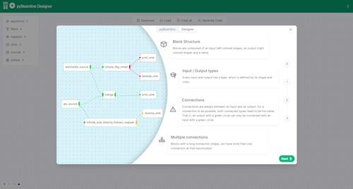

pyBeamline

pyBeamline is a Python version of Beamline. While the same set of ideas and principles of Beamline have been ported into pyBeamline, the underlying goal and technology are very different.
pyBeamline is based on ReactiveX and its Python binding RxPY. RxPY is a library for composing asynchronous and event-based programs using observable sequences and pipable query operators in Python. Using pyBeamline it is possible to inject process mining operators into the computation.
A complete Jupyter notebook presenting all implemented techniques is available at https://github.com/beamline/pybeamline/blob/master/tutorial.ipynb.

pyBeamline Designer
To help getting started, you can try the pyBeamline Designer, available at https://beamline.github.io/pybeamline-designer/:

Goals and differences with Beamline
The main difference between Beamline and pyBeamline is the language they are built in (Beamline is written in Java, pyBeamline is written in Python). However, differences do not stop here. In particular, Beamline is built on top of Apache Flink, which makes it suitable for extremely efficient computation due to the distributed and stateful nature of its components. pyBeamline, on the other end, is built on top of ReactiveX which is
an extension of the observer pattern to support sequences of data and/or events and adds operators that allow you to compose sequences together declaratively while abstracting away concerns about things like low-level threading, synchronization, thread-safety, concurrent data structures, and non-blocking I/O. (From https://reactivex.io/intro.html)
Therefore, pyBeamline is suited for prototyping algorithm very quickly, without necessarily bothering with performance aspects. In a sense, it simplifies the construction of proof of concepts, before translating the algorithms into Beamline for proper testing and verification. Also, it simplifies collaboration by, for example, leveraging online services (like Google Colab).
To give an example of such simplicity, this is the complete code to discover a DFG using a sliding window from a stream generated from a test.xes file (a file is used instead of a proper stream, as we are in a very controlled setting):
from pybeamline.sources import xes_log_source_from_file
from pybeamline.mappers import sliding_window_to_log
from reactivex.operators import window_with_count
from pm4py import discover_dfg_typed
xes_log_source_from_file("test.xes").pipe(
window_with_count(6),
sliding_window_to_log()
).subscribe(lambda log: print(discover_dfg_typed(log)))
Differences with PM4PY
PM4PY has a package dedicated to streaming algorithms. This package, however, does not allow the construction of the dataflow for the processing of the events. Instead, it allows the application of a single algorithm on a defined stream. While this might be useful in certain situation, having the ability to construct the dataflow represents a fundamental architecture for stream processing.
What is a dataflow?
Here is the definition from the corresponding Wikipedia page:
In computing, dataflow is a broad concept, which has various meanings depending on the application and context. In the context of software architecture, data flow relates to stream processing or reactive programming.
[...]
Dataflow computing is a software paradigm based on the idea of representing computations as a directed graph, where nodes are computations and data flow along the edges. Dataflow can also be called stream processing or reactive programming.
There have been multiple data-flow/stream processing languages of various forms (see Stream processing). Data-flow hardware (see Dataflow architecture) is an alternative to the classic von Neumann architecture. The most obvious example of data-flow programming is the subset known as reactive programming with spreadsheets. As a user enters new values, they are instantly transmitted to the next logical "actor" or formula for calculation.
Distributed data flows have also been proposed as a programming abstraction that captures the dynamics of distributed multi-protocols. The data-centric perspective characteristic of data flow programming promotes high-level functional specifications and simplifies formal reasoning about system components.
Installing the library
To use pyBeamline on any OS, install it using pip:
Basic concepts
In this section the basic concepts of pyBeamline are presented.
Events
The pyBeamline framework comes with its own definition of event, called BEvent, similarly to what is defined in Beamline. Here some of the corresponding methods are highlighted:
Essentially, a Beamline event, consists of 3 maps for attributes referring to the process, to the trace, and to the event itself. While it's possible to set all the attributes individually, some convenience methods are proposed as well, such as getTraceName which returns the name of the trace (i.e., the case id). Internally, a BEvent stores the basic information using as attribute names the same provided by the standard extension of OpenXES. Additionally, setters for attributes defined in the context of OpenXES are provided too, thus providing some level of interoperability between the platforms.
Observables and Sources
An observer subscribes to an Observable. Then that observer reacts to whatever item or sequence of items the Observable emits. This pattern facilitates concurrent operations because it does not need to block while waiting for the Observable to emit objects, but instead it creates a sentry in the form of an observer that stands ready to react appropriately at whatever future time the Observable does so. -- Text from https://reactivex.io/documentation/observable.html.
General sources
In the context of Beamline it is possible to define observables of any type. The framework comes with some observables already defined. Sources already implemented are xes_log_source, xes_log_source_from_file, and string_test_source. A xes_log_source creates a source from a static log (useful for testing purposes), xes_log_source_from_file creates a source from an XES file, and string_test_source allows the definition of simple log directly in its constructor (useful for testing purposes).
Details on xes_log_source and xes_log_source_from_file
Emits all events from an XES event log. Example usage:
import pm4py
from pybeamline.sources import xes_log_source
xes_log_source(pm4py.read_xes("test.xes")) \
.subscribe(lambda x: print(str(x)))
A shortcut to load from a file is:
Details on string_test_source
Source that considers each trace as a string provided in the constructor and each event as one character of the string. Example usage:
Details on log_source
Example of usages:
The following sources offer connections to external services:
Details on mqttxes_source
Source that connects to an MQTT endpoint and expects events to be published according to the MQTT-XES format (see https://beamline.cloud/mqtt-xes/). Example usage:
from pybeamline.sources import mqttxes_source
mqttxes_source('broker.mqtt.cool', 1883, 'base/topic/') \
.subscribe(lambda x: print(str(x)))
input()
broker.mqtt.cool is the URL of the MQTT broker, 1883 is the broker port, and base/topic/ is the base topic. Please note the input() at the end, which is necessary to avoid that the application terminates thus not receiving any more events.
Real-world sources
In addition to the previous sources these are also implemented. The following sources observe real data and hence are not controllable and maybe not suitable for testing.
Details on wikimedia_source
Source that connects to the stream of recent change operations happening on the Media Wiki websites (see https://wikitech.wikimedia.org/wiki/Event_Platform/EventStreams_HTTP_Service and https://www.mediawiki.org/wiki/Manual:RCFeed). Example usage:
It is advisable to apply a filter operation to consider only events relevant to one of the websites, such as:Details on ais_source
The automatic identification system (AIS) is an automatic tracking system that uses transceivers on ships and is used by vessel traffic services. This source considers the MMSI (https://en.wikipedia.org/wiki/Maritime_Mobile_Service_Identity) as the case id and the navigation status (when available) as the activity (https://en.wikipedia.org/wiki/Automatic_identification_system#Broadcast_information). While it is possible connect to any AIS data provider (by passing host and port parameters), by default, the source connects to the Norwegian Coastal Administration server, which publishes data for the from vessels within the Norwegian economic zone and the protection zones off Svalbard and Jan Mayen (see https://www.kystverket.no/en/navigation-and-monitoring/ais/access-to-ais-data/).
ATTENTION: while a lot of events are produced by this source, traces are very short and it can take a long time before two events with the same case id are actually observed.
Example usage:
Combining sources
In order to build tests where drifts occur in a controlled setting, it is possible to concatenate different sources together. See the example below:
from reactivex import concat
from pybeamline.sources import xes_log_source_from_file, log_source
src1 = xes_log_source_from_file("tests/log.xes")
src2 = log_source(["ABCD", "ABCD"])
src3 = xes_log_source_from_file("tests/log.xes")
concat = concat(src1, src2, src3)
concat \
.subscribe(lambda x: print(str(x)))
Filters
The filter operator, in ReactiveX, does not change the stream, but filters the events so that only those passing a predicate test can pass. In Beamline there are some filters already implemented that can be used as follows:
from pybeamline.sources import log_source
from pybeamline.filters import excludes_activity_filter, retains_activity_filter
log_source(["ABC", "ACB", "EFG"]).pipe(
excludes_activity_filter("A"),
retains_activity_filter("G")
).subscribe(lambda x: print(str(x)))
Filters can operate on event attributes or trace attributes and the following are currently available:
Details on retains_on_event_attribute_equal_filter
Retains events based on the equality of an event attribute. Example:
Details on excludes_on_event_attribute_equal_filter
Exclude events based on the equality of an event attribute.
Details on retains_on_trace_attribute_equal_filter
Retains events based on the equality of a trace attribute.
Details on excludes_on_trace_attribute_equal_filter
Excludes events based on the equality of a trace attribute.
Details on retains_activity_filter
Retains activities base on their name (concept:name).
Details on excludes_activity_filter
Excludes activities base on their name (concept:name).
Please note that filters can be chained together in order to achieve the desired result.
Mappers and mining algorithms
pyBeamline comes with some mining algorithms, which are essentially instantiations of map and flatMap operators. This section reports some detail on these.
Discovery techniques
In the core of the pyBeamline library, currently, there is only one mining algorithm implemented:
Details on infinite_size_directly_follows_mapper
An algorithm that transforms each pair of consequent event appearing in the same case as a directly follows operator (generating a tuple with the two event names). This mapper is called infinite because it's memory footprint will grow as the case ids grow.
An example of how the algorithm can be used is the following:
This code will print:Details on simple_dfg_miner
An algorithm that simply constructs the DFG considering infinite amount of memory available. It has 2 parameters: the model_update_frequency that determines how often the model should be updated, and the min_relative_frequency that determines the minimum relative frequency that a directly follow relations should have to be generated.
An example of how the algorithm can be used is the following:
Details on heuristics_miner_lossy_counting
An algorithm to mine a Heuristics Net using the Lossy Counting algorithm. The Heuristics Net is the same type as in the PM4PY library (see https://pm4py.fit.fraunhofer.de/documentation#item-3-3)
An example of how the algorithm can be used is the following:
from pybeamline.algorithms.discovery import heuristics_miner_lossy_counting
log_source(["ABCD", "ABCD"]).pipe(
heuristics_miner_lossy_counting(model_update_frequency=4)
).subscribe(lambda x: print(str(x)))
{'A': (node:A connections:{B:[0.5]}), 'B': (node:B connections:{C:[0.5]}), 'C': (node:C connections:{})}
{'C': (node:C connections:{D:[0.5]}), 'D': (node:D connections:{}), 'A': (node:A connections:{B:[0.6666666666666666]}), 'B': (node:B connections:{C:[0.6666666666666666]})}
The algorithm is describe in publications:
- Control-flow Discovery from Event Streams
A. Burattin, A. Sperduti, W. M. P. van der Aalst
In Proceedings of the Congress on Evolutionary Computation (IEEE WCCI CEC 2014); Beijing, China; July 6-11, 2014. - Heuristics Miners for Streaming Event Data
A. Burattin, A. Sperduti, W. M. P. van der Aalst
In CoRR abs/1212.6383, Dec. 2012.
Details on heuristics_miner_lossy_counting_budget
An algorithm to mine a Heuristics Net using the Lossy Counting with Budget algorithm. The Heuristics Net is the same type as in the PM4PY library (see https://pm4py.fit.fraunhofer.de/documentation#item-3-3)
An example of how the algorithm can be used is the following:
from pybeamline.algorithms.discovery import heuristics_miner_lossy_counting_budget
log_source(["ABCD", "ABCD"]).pipe(
heuristics_miner_lossy_counting_budget(model_update_frequency=4)
).subscribe(lambda x: print(str(x)))
{'A': (node:A connections:{B:[0.5]}), 'B': (node:B connections:{C:[0.5]}), 'C': (node:C connections:{D:[0.5]}), 'D': (node:D connections:{})}
{'A': (node:A connections:{B:[0.6666666666666666]}), 'B': (node:B connections:{C:[0.6666666666666666]}), 'C': (node:C connections:{D:[0.6666666666666666]}), 'D': (node:D connections:{})}
The algorithm is describe in publications:
- Control-flow Discovery from Event Streams
A. Burattin, A. Sperduti, W. M. P. van der Aalst
In Proceedings of the Congress on Evolutionary Computation (IEEE WCCI CEC 2014); Beijing, China; July 6-11, 2014. - Heuristics Miners for Streaming Event Data
A. Burattin, A. Sperduti, W. M. P. van der Aalst
In CoRR abs/1212.6383, Dec. 2012.
Conformance checking techniques
Currently only conformance checking using behavioral profiles is supported.
Details on behavioral_conformance
An algorithm to compute the conformance using behavioral patterns.
An example of how the algorithm can be used is the following:
from pybeamline.algorithms.conformance import mine_behavioral_model_from_stream, behavioral_conformance
source = log_source(["ABCD", "ABCD"])
reference_model = mine_behavioral_model_from_stream(source)
print(reference_model)
log_source(["ABCD", "ABCD"]).pipe(
excludes_activity_filter("A"),
behavioral_conformance(reference_model)
).subscribe(lambda x: print(str(x)))
([('A', 'B'), ('B', 'C'), ('C', 'D')], {('A', 'B'): (0, 0), ('B', 'C'): (1, 1), ('C', 'D'): (2, 2)}, {('A', 'B'): 2, ('B', 'C'): 1, ('C', 'D'): 0})
(1.0, 0.5, 1)
(1.0, 1.0, 1)
(1.0, 0.5, 1)
(1.0, 1.0, 1)
- Online Conformance Checking Using Behavioural Patterns
A. Burattin, S. van Zelst, A. Armas-Cervantes, B. van Dongen, J. Carmona
In Proceedings of BPM 2018; Sydney, Australia; September 2018.
Windowing techniques
ReactiveX comes with a very rich set of windowing operators that can be fully reused in pyBeamline. Applying a windowing techniques allows the reusage of offline algorithms (for example implemented in PM4PY) as each window is converted into a Pandas DataFrame.
To transform the window into a DataFrame, the sliding_window_to_log operators need to be piped to the source.
Details on sliding_window_to_log
Let's assume, that we want to apply the DFG discovery implemented on PM4PY on a stream usind a tumbling window of size 3. We can pipe the window operator to the sliding_window_to_log so that we can subscribe to EventLogs objects.
An example is shown in the following:
from pybeamline.sources import log_source
from pybeamline.mappers import sliding_window_to_log
from reactivex.operators import window_with_count
import pm4py
def mine(log):
print(pm4py.discover_dfg_typed(x))
log_source(["ABC", "ABD"]).pipe(
window_with_count(3),
sliding_window_to_log()
).subscribe(mine)
window_with_count(6)) will produce the following:
In this case, the only model extracted embeds both traces inside.
Utilities
There are some utilities functionalities implemented in the library. They are listed below:
Details on lambda_operator
This function allows the definition of an operator according to a function defined somewhere else. It is the most flexible operator and, in case a value is return, then the pipeline will continue. If None is returned, then the pipeline does not continue.
The example below shows how this operator can be used to define custom filters and custom miners:
from pybeamline.algorithms.lambda_operator import lambda_operator
from pybeamline.sources.string_test_source import string_test_source
def my_filter(event):
return event if (event.get_event_name() == "A") else None
def my_miner(event):
return [('Start', event.get_event_name())]
string_test_source(["ABCDE", "ACBDE"]).pipe(
lambda_operator(my_filter),
lambda_operator(my_miner)
).subscribe(lambda x: print(str(x)))
Details on dfg_to_graphviz
This function allows the transformation of the DFG produced with the simple_dfg_miner into the corresponding Graphviz string. It can be used for visualization of the model.
An example is shown in the following:
from pybeamline.sources.real_world_sources import wikimedia_source
from pybeamline.algorithms.discovery.dfg_miner import simple_dfg_miner
from pybeamline.utils import dfg_to_graphviz
def display(graphviz_string):
print(graphviz_string) # In reality, a more advance processing is expected here :)
wikimedia_source().pipe(
simple_dfg_miner()
).subscribe(lambda x: display(dfg_to_graphviz(x)))
Integration with other libraries
River
River (https://riverml.xyz/) is a library to build online machine learning models. Such models operate on data streams. River includes several online machine learning algorithms that can be used for several tasks, including classification, regression, anomaly detection, time series forecasting, etc. The ideology behind River is to be a generic machine learning which allows to perform these tasks in a streaming manner. Indeed, many batch machine learning algorithms have online equivalents. Note that River also supports some more basic tasks. For instance, you might just want to calculate a running average of a data stream.
It is possible to integrate pyBeamline's result into River to leverage its ML capabilities. For example, let's say we want to use concept drift detection using the ADWIN algorithm. In particular, we are interested in computing if the frequency of the directly follows relation BC changes over time. To accomplish this task, let's first build a log where we artificially inject two of such drifts:
import random
log_original = ["ABCD"]*10000 + ["ACBD"]*500
random.shuffle(log_original)
log_after_drift = ["ABCD"]*500 + ["ACBD"]*10000
random.shuffle(log_after_drift)
log_with_drift = log_source(log_original + log_after_drift + log_original)
log_original and log_after_drift) which include the same process variants but that differ in the number of occurrences. Finally, we construct our pyBeamline log source log_with_drift by concatenating log_original + log_after_drift + log_original.
After that we can use the capabilities of pyBeamline and reactivex to construct a pipeline that produce a sequence of frequencies corresponding to the frequency of directly follows relation BC in window with length 40 (which is chosen as all our traces have length 4). Also note that we leverage the fact that in all our events when B and C appear they are always in the same trace (because of how log_source generates the observable). We will later define a function check_for_drift:
import reactivex
from reactivex import operators as ops
log_with_drift.pipe(
ops.buffer_with_count(40),
ops.flat_map(lambda events: reactivex.from_iterable(events).pipe(
ops.pairwise(),
ops.filter(lambda x: x[0].get_trace_name() == x[1].get_trace_name() and x[0].get_event_name() == "B" and x[1].get_event_name() == "C"),
ops.count()
)
)
).subscribe(lambda x: print(x))
from reactivex import operators as ops
from river import drift
drift_detector = drift.ADWIN()
data = []
drifts = []
def check_for_drift():
index = 0
def _process(x):
nonlocal index
drift_detector.update(x)
index = index + 1
if drift_detector.drift_detected:
drifts.append(index)
def _check_for_drift(obs):
return obs.pipe(ops.do_action(lambda value: _process(value)))
return _check_for_drift
check_for_drift can now be piped to the previous computation. Plotting the frequencies and the concept drifts will result in the following:

For a complete working example, see https://github.com/beamline/pybeamline/blob/master/tutorial.ipynb.
Citation
Please, cite this work as:
- Andrea Burattin. "Beamline: A comprehensive toolkit for research and development of streaming process mining". In Software Impacts, vol. 17 (2023).